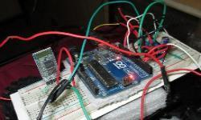
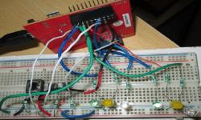
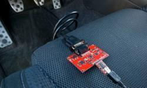
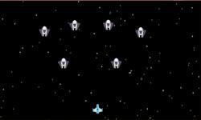
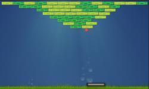
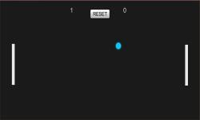

Aim of the project is to design Central home control and
monitoring system using an embedded microprocessor and microcontroller, with
IP connectivity for accessing and controlling devices and appliances using android
application and through a website. This whole system is linked with a personal
assistant Alexa by adding it with custom skillsets. Keyless entry is designed with
existing Bluetooth devices such as mi band (tested), fitbit etc.
Raspberry Pi, Nodejs, Esp8266
Smart Watch
This digital clock was built on Arduino using the Nokia 5110 display module which can be connected
using Android smartphone (using Bluetooth HC-05) and has the following features such as music
player control, email notification, weather data and Alarm sync.
Arduino, Android, HC-05 Bluetooth
Voice Controlled Robot

SThe voice was translated using the google Api and then transmitted by Bluetooth HC-05 to the arduino and the bot performs the actions accordingly. The Android was also designing was done using android studio.
Arduino, Android, HC-05 Bluetooth
Smart traffic light

Road sensors are used and the traffic lights changes accordingly. Walk lights are also used.Created using state machines.
TEXAS LAUNCHPAD TM4C123, Keil
Infortainment System

This is a low cost system( made on raspberry pi) which gets data from the vehicle OBD ports and transmits this to the servers. This system can be attached to any vehicle and the data can be displayed to the driver and third party.
Beaglebone, Python
GAME DEVELOPMENT PROJECTS
Andriod Space Shooter

This game was designed for android platform and has multi touch support.
This is a Space shooter game in which the enemy spaceships come randomly and
the player has to shoot them down for which the player gets 150 points.The player has some specific heath and will die
after getting 4 hits from enemy spaceship.The game also has shooting animations
Andriod, Unity 3d, JavaScript
Block Breaker

this was designed for windows standalone platform and has keyboard controls.
Resolution 800*600 This is a simple game in which we have to break all the blocks with the ball and not let the ball fall off the controller platform.The blocks are of three types i.e destroyed with 1,2 and 3 hits.
In this game the scripting was done using C# and the game assets were designed using Adobe illustrator.
Unity 3d, c#, Illustrator
Ping Pong

This ping pong 2D game was made on Unity 3d IDE. This game is designed for windows Standalone platform.
This is a two player game in which both the players used the same keyboard to control their respective platforms and individual scores are recorded accordingly.
The scripting of the game was done on C# language. The Sprites were made on photoshop.